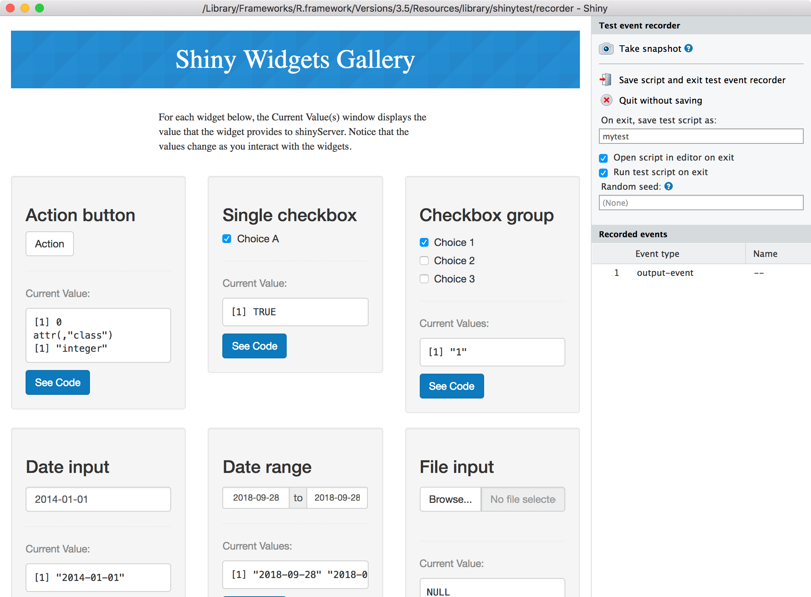
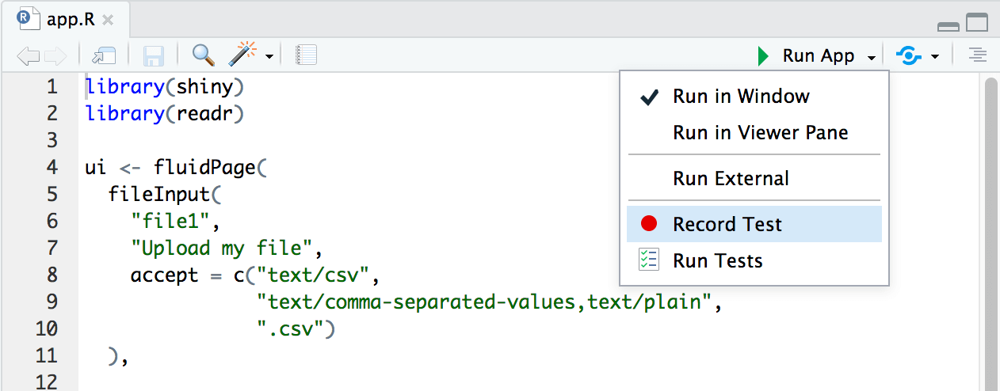
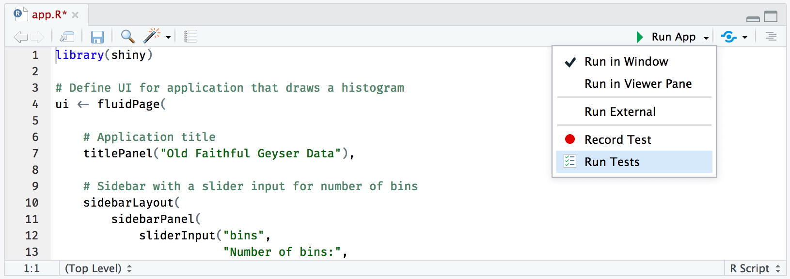
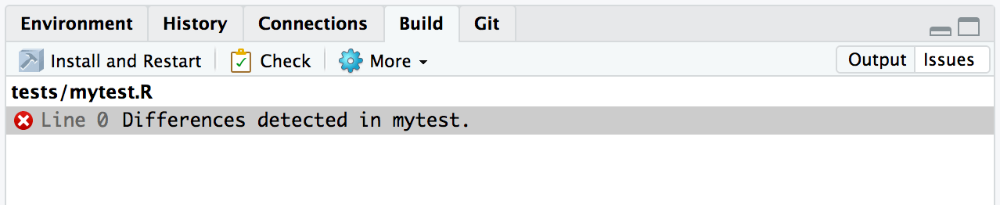
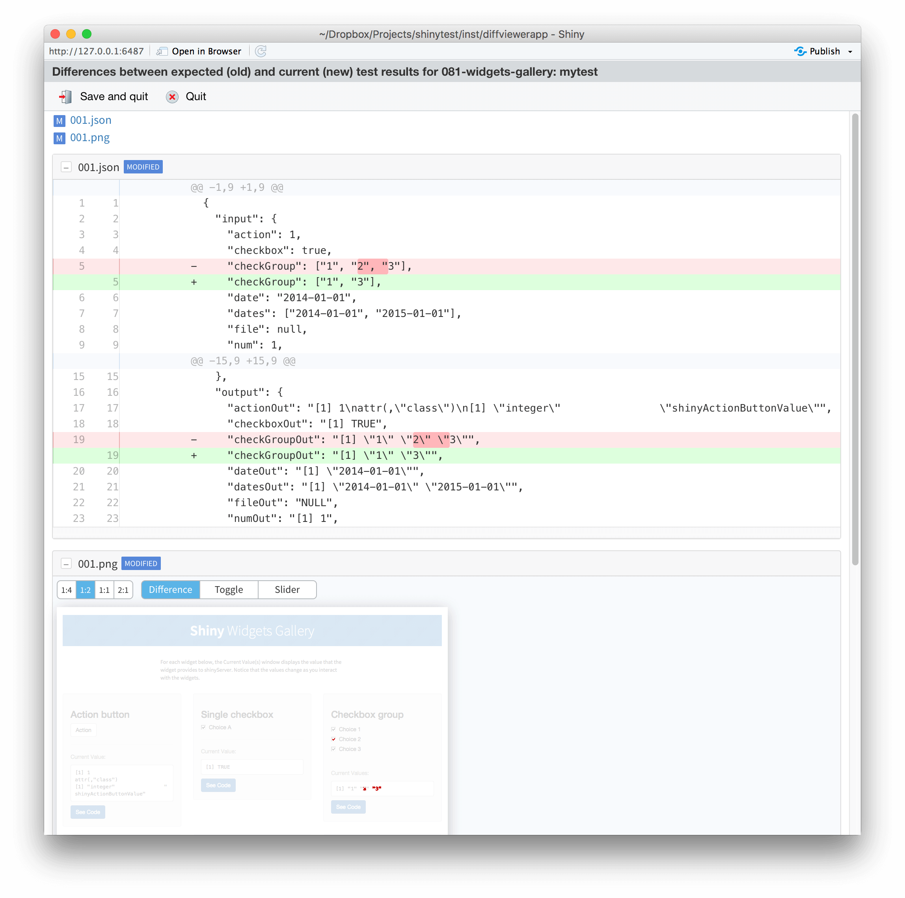
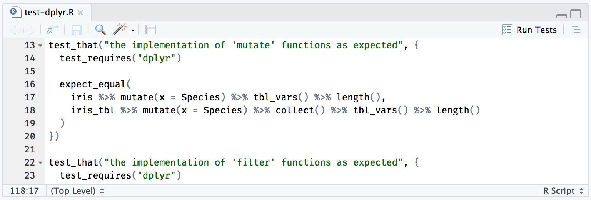
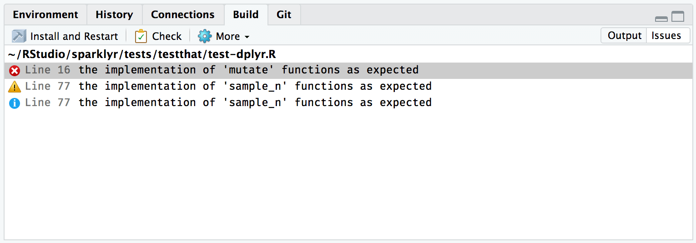

2018-10-18
Continuing our series on new features in the RStudio v1.2 preview release, we would like to introduce shinytest. shinytest is a package to perform automated testing for Shiny apps, which allows us to:
Record Shiny tests with ease.
Run and troubleshoot Shiny tests.
shinytest is available on CRAN, supported in RStudio v1.2 preview and can be installed as follows:
install.packages("shinytest")
This is the general procedure for recording tests:
recordTest() to launch the app in a test recorder.tests/.tests/ directory.To record tests form R, run the following:
library(shinytest)
# Launch the target app (replace with the correct path)
recordTest("path/to/app")To record a test from RStudio v1.2, when an application file (app.R, server.R, ui.R, or global.R) is open in the editor, a button labeled Run App will show at the top of the editor pane. If you click on the small black triangle next to Run App, a menu will appear.

In a separate R process, this launches the Shiny application to be tested. We’ll refer to this as the target app. This also launches a special Shiny application in the current R process which displays the target app in an iframe and has some controls outside the iframe. We’ll refer to this as the recorder app. You will see something like this:
On the left is the target app (in this case, the “Shiny Widgets Gallery”), and on the right is the recorder app (titled “Test event recorder”). Note that you may need to make the browser window wider because the recorder panel occupies some space.
The panel on the right displays some controls for the test recorder, as well as a list of Recorded events. As you interact with the target app – in other words, when you set inputs on the app – you will see those interactions recorded in the Recorded events list.
For testing a Shiny application, setting inputs is only one part. It’s also necessary to check that the application produces the correct outputs. This is accomplished by taking snapshots of the application’s state.
There are two ways to record output values. One way is to take a snapshot of the application’s state. This will record all input values, output values, and exported values (more on exported values later). To do this, click the “Take snapshot” button on the recorder app.
When you quit the test recorder, it will automatically run the test script. There are three separate components involved in running the tests:
First is the test driver. This is the R process that coordinates the testing and controls the web browser. When working on creating tests interactively, this is the R process that you use.
Next is the Shiny process, also known as the server. This is the R process that runs the target Shiny application.
Finally, there is the web browser, also known as the client, which connects to the server. This is a headless web browser – one which renders the web page internally, but doesn’t display the content to the screen (PhantomJS).
When you exit the test recorder, it will by default automatically run the test script, and will print something like this:
Saved test code to /path/to/app/tests/mytest.R
Running mytest.R
====== Comparing mytest ...
No existing snapshots at mytest-expected/. This is a first run of tests.
Updating baseline snapshot at tests/mytest-expected
Renaming tests/mytest-current
=> tests/mytest-expected.Behind the scenes, it runs testApp(). You can manually run the tests with this:
testApp("myshinyapp", "mytest")From RStudio v1.2, you can simply Run Tests from the drop down menu in your Shiny app source file:

After the initial test run, you can run the tests again in the future to check for changes in your application’s behavior.
If there are any differences between the current and expected results, you’ll see this output in R:
Running mytest.R
====== Comparing mytest ...
Differences detected between mytest-current/ and mytest-expected/:
Name Status
001.json != Files differ
001.png != Files differ
Would you like to view the differences between expected and current results [y/n]? When running inside RStudio, failed test are visible under the issues tab.

For each test with different results, you can see the differences between the expected and current results. For screenshots, the differences will be highlighted in red. You can also choose different ways of viewing the differences in screenshots:

For additional information on shinytest please visit: rstudio.github.io/shinytest.
While shinytest is well suited for testing Shiny applications, you can also consider testing particular functions using the testthat package. While we won’t discuss in detail the testthat package in this post, we would like to highlight a couple improvements in RStudio v1.2.
First, similar to shinytest tests, you can now run specific testthat tests from each source file, this is useful to quickly validate specific functionality or troubleshot broken tests with ease, a new Run Tests command is available on the top-right of each test file:

Second, when tests fail, you can switch into a new Issues tab to browse a list of failed issues. You can also double-click each entry to open the file associated with the failure:

You can try this new functionality in the RStudio v1.2 Preview Release at https://www.rstudio.com/products/rstudio/download/preview/. If you have any questions or comments, please get in touch with us on the community forums.